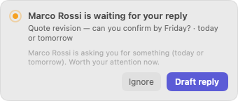
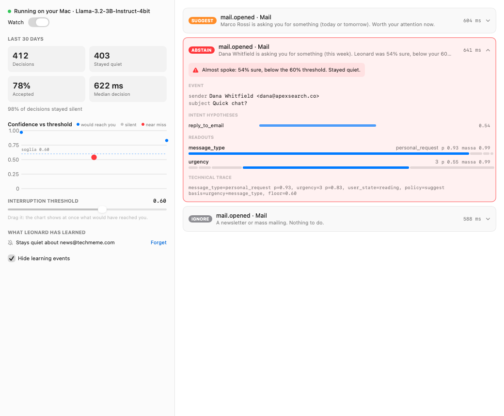
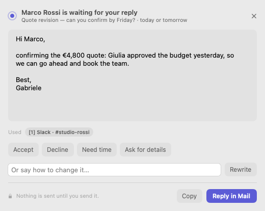
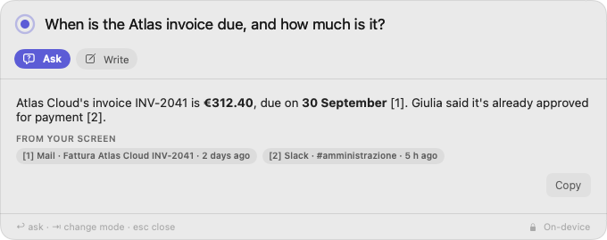
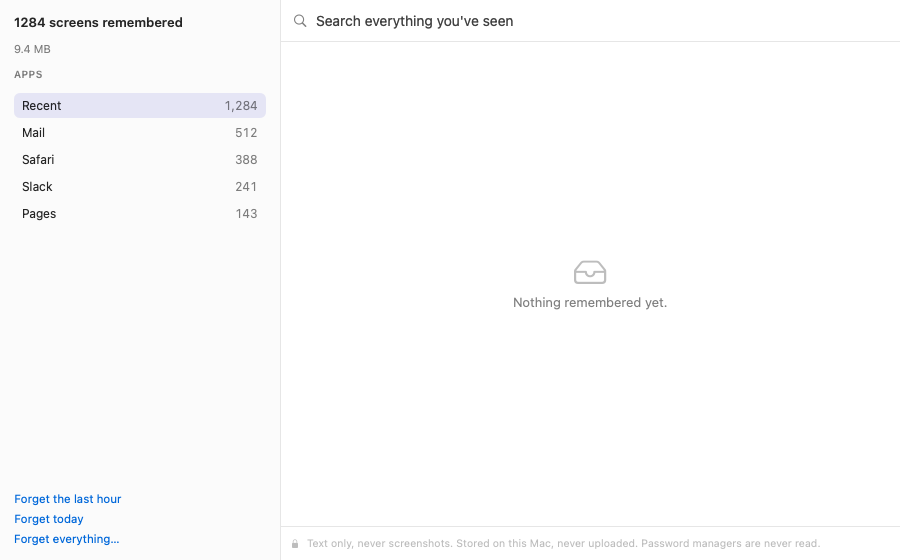

The assistant that knows
when to stay quiet.
Leonard lives in your menu bar, reads what you read, and speaks up only when something truly needs you — then writes the reply for you. It runs entirely on your Mac: no cloud, no account, nothing leaves.
14 days free · no account · no credit card
Hi Gabriele, I've reviewed the numbers: the total is €4,800. I need a confirmation by Friday to hold the team's availability. Thanks! Marco

Three things, done the way a trusted colleague would.
Knows which email needs you
Open a message in Mail. If it needs you, Leonard says so — once, quietly — and drafts the reply in a real Mail window. Newsletters, receipts and FYIs never get a word.
Answers from what you've seen
Press ⌥ Space in any app. “What was the IBAN Marco sent?” “When is the Atlas invoice due?” Leonard answers from what was on your screen, and shows where.
Writes with you, in every app
Select text anywhere to improve it, translate it, summarize it or reply to it — and replace it in place with one click. In English and Italian.
It decides when not to interrupt you.
Every proactive assistant dies of noise. Leonard treats silence as a decision: each one carries a calibrated confidence, and your threshold decides what reaches you. Mind shows all of it — including the near-misses, when Leonard almost spoke and why it didn't.
- A confidence on every decision, and a threshold you control
- Things worth doing but not worth interrupting for wait quietly in the menu bar
- Learns from your answers — and mutes senders you always ignore
- Every rule it learns is visible, and one click undoes it


Drafts that know the context.
Press Prepare and Leonard writes the reply in the email's language and tone, using what it has seen on your screen — the budget Giulia approved on Slack, the quote you discussed last week. One click turns it into an acceptance, a polite no, or a request for more time.
- Opens a real reply window in Mail. It never sends anything.
- Flags any date or figure it couldn't find in the email
- Formal or friendly, English or Italian — it follows the sender
Find anything you've seen. Ask in plain words.
Leonard remembers the text of what crosses your screen — emails, documents, chats, web pages — so you never have to remember where you saw something. Answers cite their source, and when it doesn't know, it says so.
- Works in every app, from the keyboard
- Rewrite, translate, summarize or reply to a selection
- Answers stream in as they're written, on your Mac


A memory you can read — and delete.
Leonard's memory is text, never screenshots: a few megabytes a day, searchable, readable by you. Forget the last hour, a whole app, or everything, and it is gone from the database for real.
- Password managers, Keychain and private windows are never read
- Card numbers, API keys and one-time codes are redacted before storing
- Forgets after 30 days unless you choose otherwise
Private by architecture, not by promise.
An assistant is only as useful as what it knows about your work — and the more it knows, the less it can afford to phone home. Leonard can know everything precisely because none of it leaves your Mac.
The engine has no network access
Leonard's engine cannot open a connection. A test fails the build if it ever could.
The AI runs on your Mac
A language model resident in memory on Apple silicon. No API keys, no tokens, no usage caps, works offline.
One download, verified
The model is fetched once, when you say so, and checked against its published SHA-256 before it is ever loaded.
No account, no telemetry
There is nothing to sign up for and nothing reporting back. We don't know you use Leonard until you buy it.
Text, not screenshots
Memory comes from the text macOS already exposes to accessibility tools — readable, searchable, small.
Delete means delete
By item, by app, by hour or all of it. Decision history follows its own retention setting too.
| Leonard | Cloud AI assistants | |
|---|---|---|
| Where your email is read | On your Mac | On their servers |
| Works offline | Yes | No |
| Knows when to stay quiet | Calibrated, and you set the threshold | — |
| Remembers your screen | As text, on your Mac, deletable | Screenshots in the cloud, or not at all |
| Account required | No | Yes |
| Price | Once | Every month |
For people who can't paste client email into a chatbot.
If your inbox is full of things that are not yours to share — clients' affairs, patients' records, deals under NDA — Leonard is the assistant you are allowed to use.
Pay once. Keep it forever.
We don't run servers for you, so we don't charge you rent. Every edition has every feature and includes a year of updates.
Personal
For one person.
- Every feature
- Up to 2 Macs
- 1 year of updates
- Keeps working forever
- Email support
Pro
For your practice, on every Mac you use.
- Every feature
- Up to 3 Macs
- 1 year of updates
- Priority support, next business day
- VAT invoice for your business
Firm
For teams of 5 or more.
- Every feature
- Volume licensing
- Deployment guide for managed Macs
- Onboarding call
- Priority support
Prices include VAT where applicable. 14-day free trial, 30-day money-back guarantee. Updates after the first year are optional.
Questions, answered plainly.
Does Leonard send anything to the internet?
No. The only network request it ever makes is the one-time model download, which you start yourself. The engine that reads your screen cannot open a network connection at all. “Check for updates” simply opens our website in your browser. You can confirm all of this with any firewall, like Little Snitch or LuLu.
Which Macs does it run on?
Any Mac with Apple silicon (M1 or later) running macOS 14 Sonoma or later. We recommend 16 GB of memory; the model uses about 2 GB while Leonard runs.
Which apps does it work with?
Proactive email help works with Apple Mail. Ask Leonard, writing help and memory work in every app that exposes its text to macOS accessibility — which is nearly all of them, including browsers, Pages, Word, Slack and Notes.
Is it as good as ChatGPT at writing?
No, and we won't pretend otherwise. A model small enough to run privately on your laptop writes good short emails, not essays. Leonard makes up for it with context — it knows what you've seen — and it flags any date or figure it couldn't verify, so you can check before you send.
Which languages does it speak?
English and Italian, both for the app and for writing. Replies follow the language of the email you're answering.
What permissions does it need, and why?
Two. Accessibility, to read the text of the window in front of you and to insert what it writes. Mail automation, to read the message you open and to open a reply window. Leonard shows you why before macOS asks, and works in a reduced way if you say no.
What happens after the first year?
Leonard keeps working, forever. Your license includes a year of updates; after that you can renew updates if you want the new versions, or keep the one you have.
Can I get a refund?
Yes — within 30 days of purchase, for any reason. Write to support@leonard.app.
Is Leonard GDPR-friendly?
Leonard sends no personal data to us or to anyone else, so there is no processor, no international transfer and no account to manage. What it stores stays on your Mac, under your control, with retention and deletion you set.
Meet Leonard.
Try every feature free for 14 days. No account, no card, nothing leaves your Mac.
Download for Mac